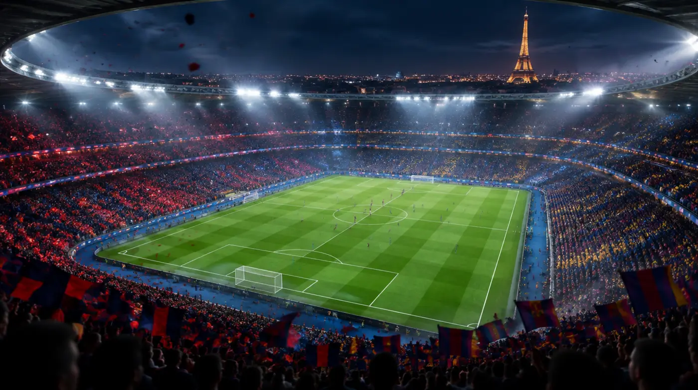
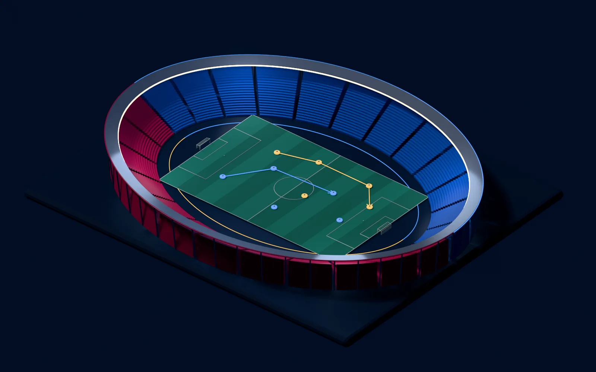
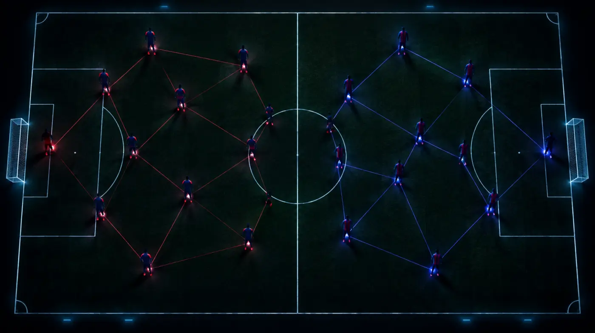
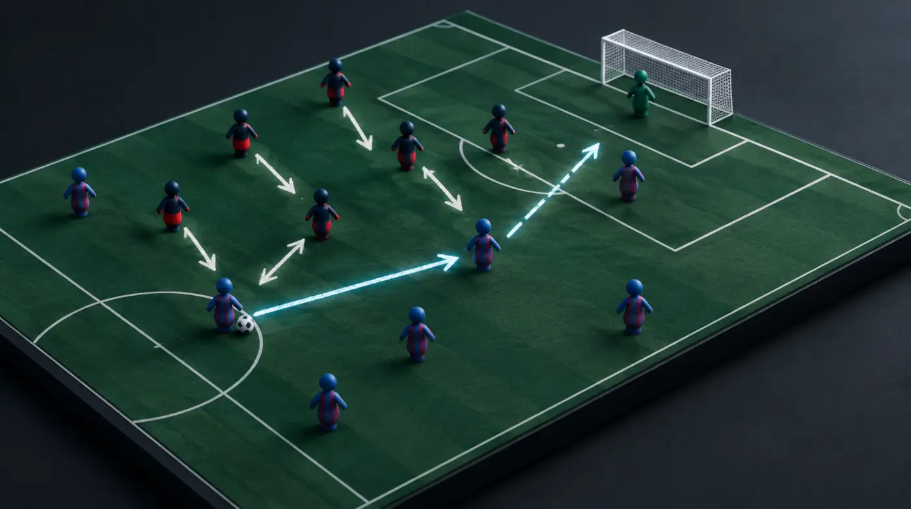
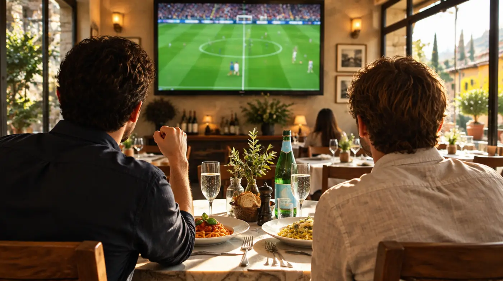

Meet the moving parts.
Tap all 22 starters. Learn the role, the risk and one revealing thing to watch.

Two brilliant teams.
Twenty-two moving problems.
A whole new way to watch.

Eleven players move. Every available route changes.
Concept artwork created in Blender through Higgsfield. Not an exact model of the Parc or an actual lineup.Forget following only the ball. Tonight, watch who creates a decision for somebody else. A runner drags a defender. A patient midfielder invites a press. A winger waits until help is one step too far away.
Tap all 22 starters. Learn the role, the risk and one revealing thing to watch.
Press, hold, stretch. Change a decision and see which space it opens.
A rivalry time machine, a designer’s eye and a field notebook for your lunch.

Tap a name for the player’s role and a viewing lens. The XI is confirmed; the geometry is a teaching model.
Selection does not guarantee an appearance. Roles and substitutions depend on the game state.
If Hernández steps out to Yamal, watch the channel behind him. If he waits, Yamal may receive time to face forward. A supporting midfielder can change the whole equation.
Watch whether Barça’s right-sided defender meets the dribble alone or has cover. Help closes one route, but takes a teammate away from another job.
Hakimi going forward can stretch Barça. It can also leave a running lane for Gordon if possession changes. First look for the pass that releases the runner.
Barça are without Koundé and Eric García. Christensen and Bardghji are also absent from the squad. PSG are without Nuno Mendes. Mayulu, doubtful in the preview, is on the confirmed bench. These are selection facts; they do not tell us exactly how either team will play.

You are changing one decision in a simplified scene. Try both choices. This explains tradeoffs, not what will happen tonight.
Pressing after a loose touch is different from pressing a player already facing forward. The same shape can be safe or exposed depending on the ball carrier’s options.
Ask “What would become available if that defender moved five metres?” Watch the answer emerge before judging a choice by whether a shot went in.
Use the rivalry as a lens on how football changes. History gives context. It cannot predict tonight.
Yamal, Cubarsí and Bernal were born in 2007 and played on the same academy teams in 2018/19, 2019/20 and 2020/21. Tonight they start together on a much larger stage.
That is a useful lens for implicit communication: what can a teammate anticipate before a pass is made? Shared history is context, not proof that any particular combination will work.
The twist: Pedri developed at Las Palmas, not La Masia. Dani Olmo left for Croatia and later returned. A shared playing language can have several origins.
Barça on the generation of 2007 ↗Luis Enrique coached Barça’s 2017 comeback against PSG. He won the Champions League with Barcelona in 2015 and with Paris in 2025 and 2026. Tonight he is in the Paris dugout.
Ideas travel across a rivalry. Rather than assigning a permanent philosophy to a shirt, watch how both teams try to shrink space after losing the ball, and how differently they allocate the next player.
A teaching question: when a method moves to a new team, which principles survive and which must adapt to the people?
UEFA coaching history ↗Had the 2017 second leg finished 5-1 to Barça, the aggregate would have been 5-5 and PSG would have advanced on away goals. Sergi Roberto’s goal made it 6-1 on the night and 6-5 overall. It did not merely force extra time.
UEFA removed the knockout away-goals rule from 2021/22. Tonight is a single league-phase match, so there is no aggregate at all. The incentives are different before anybody kicks the ball.
Ask at a level score late on: would you bank one point or risk it for three? The answer depends on context, not just courage.
2017 official match sheet ↗UEFA’s analysis of the 2025 final recorded 14 final-third pressing actions and 39 sprints for Dembélé. Those are historical figures from that match, not a live statistic or a prediction for tonight.
A forward can shape a possession without touching the ball by closing an outlet and steering the next pass. Follow his approach angle: does his run block a midfielder or simply approach the centre-back?
Make a tiny prediction: which outlet is he closing? Then observe “forced long”, “trap worked”, “PSG were bypassed”, or “off camera”. The honest last answer matters.
UEFA performance analysis ↗One player sprinting is an action. A press is a shared system: the first player limits the ball carrier, the second removes the easy pass, and the back line moves up to shrink the remaining play space. If one layer arrives late, the opponent can turn the team’s own aggression into an escape route.
In design terms, this is a dependency chain with a narrow timing window. The interesting variable is not how hard each individual works, but how clearly the team reads the same trigger. A backward pass, closed body position or heavy touch can act as that shared signal.
Watch away from the ball: when the first player jumps, do the next two move with them? A failed press may have started before the final pass.
A high defensive line compresses the playable field. The offside rule makes the timing of a run as important as its destination. The attacker reads the passer and the defenders; the defenders read pressure on the ball and each other.
Think of an arena whose boundary moves while the players move. Compressing it makes short combinations harder, but leaves a large region to attack if a correctly timed runner gets behind. If the passer has time and faces forward, that space becomes more dangerous.
Pause your own attention at the moment the pass is played, not when the receiver touches the ball. That is the key moment for judging offside position. Being in an offside position alone is not an offence.
A run can create value by changing a defender’s choice. A winger pinning the full-back wide gives a teammate more space inside. A striker threatening depth may prevent a centre-back from stepping into midfield. The useful event may be a defender deciding to stay.
This is a lesson in invisible contribution. A highlight reel rewards the final action; a team’s design also depends on the people who make that action possible. Watch Raphinha’s movement around the central lane and the spaces that become available to Olmo or the wide players.
For one possession, follow a player who never receives the ball. Ask what would have been different if they had stood still.
A sideways pass can test the defence. Does a midfielder follow? Does the winger narrow? Does the back line move as a unit? Circulating the ball changes the information available to the next receiver.
Pedri and Vitinha are useful players to follow through this lens. Watch the scan before the reception, the direction of the first touch, and whether the next pass accelerates the attack or creates a better question. A slow-looking phase can be preparing a fast one.
Pick three receptions. Was the receiver looking over a shoulder before the pass arrived? Did the first touch remove a problem or create one?
This is matchday 3 of the Champions League league phase. Both teams arrive on six points after two wins. There is no two-leg aggregate to protect tonight.
In the 36-team format, each club plays eight league-phase opponents. The top eight qualify directly for the round of 16; positions 9-24 enter the knockout phase play-offs; positions 25-36 are eliminated. A result changes the table, but does not determine an entire campaign by itself.
Notice game-state incentives: with the score level late, how much risk does each team accept for two extra points? That is a different decision from defending an aggregate lead.
Tap a term. Then look for it once.

No prediction points. No penalty for being wrong. Just small experiments that make a match more interesting.
Tap a square when you spot it. Tap again to undo. Off camera? Leave it open. Each one gives you a new viewing question.
Follow an off-ball runner for one attack. If a defender follows, look at the space they leave. Nothing needs to end in a goal for the pattern to matter.
“What did a player do before the highlight that made the highlight possible?”
Pick one sequence together. Two people can see the same goal and discover different authors.